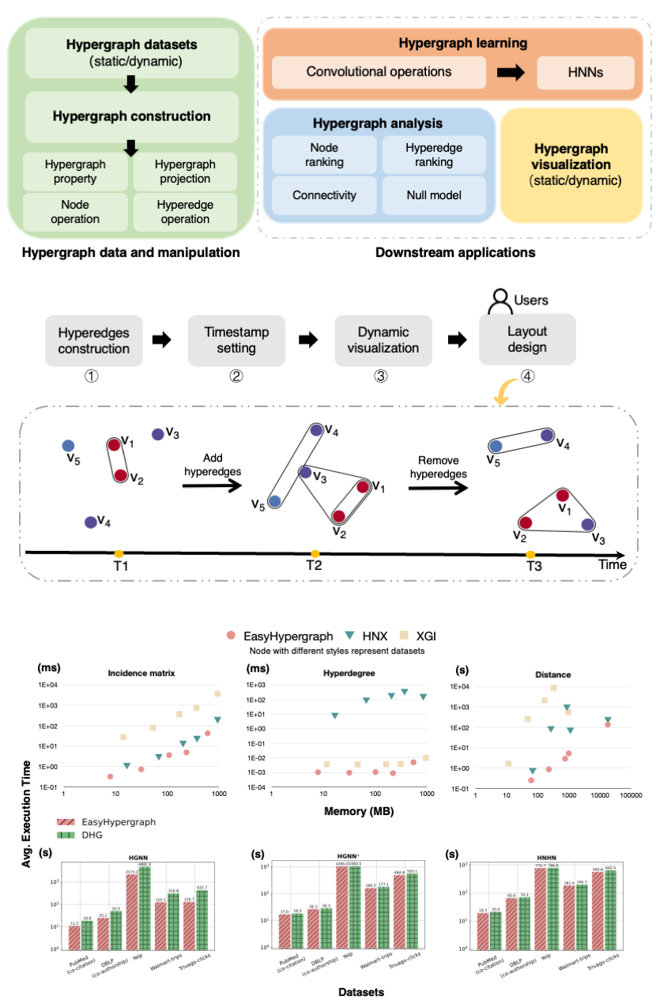

EasyHypergraph
Overview
We present a comprehensive, computation-effective, and storage-saving hypergraph library designed not only for in-depth hypergraph analysis but also for the growing field of hypergraph learning. The library, called EasyHypergraph, allows users from multiple disciplines to input hypergraph data, efficiently perform hypergraph analysis or hypergraph learning tasks on large-scale datasets by utilizing computational workflow, and gain insights from higher-order structures. EasyHypergraph’s broad capabilities and computational efficiency empower researchers and practitioners from various fields to effectively harness the potential of higher-order networks, sparking innovative solutions for practical problems. Its architecture is shown as follows:
Correlation with EasyGraph
EasyHypergraph bridges the gap between EasyGraph and higher-order relationships. EasyHypergraph is developed as an integrated library within the EasyGraph framework, maintaining full compatibility with its core architecture. Specifically, one hypergraph modeled by EasyHypergraph can be projected into a simple graph in EasyGraph by hypergraph projection algorithms. Then, users can utilize the algorithms associated with simple graphs in EasyGraph for further exploration without relying on external libraries.
Installation
Please refer to the installation of EasyGraph
Documentation
- Hypergraph class definition, properties and projection algorithms
- Hypergraph datasets module
- Hypergraph analysis module
- Hypergraph learning module
- Hypergraph visualization module
Examples
We provide a brief introduction to the fundamental properties, basic operations, and node classification tasks on hypergraph using EasyGraph.
Basic Properties and Operations of Hypergraph
Please refer to the related source code here.
Important
The nodes in our eg.Hypergraph are numbered from 0 to n - 1 (where n is the number of nodes). Each hyperedge in the hypergraph is represented as an unordered set of vertices. Therefore, hyperedges such as (0, 1, 2), (0, 2, 1), and (2, 1, 0) are considered identical.
hg = eg.Hypergraph(num_v = 5, e_list = [(0, 1, 2), (2, 3), (2, 3), (0, 4)], merge_op="sum")
print("Sparse format:",hg.incidence_matrix)
"""
Sparse format:
(0, 0) 1
(0, 2) 1
(1, 0) 1
(2, 0) 1
(2, 1) 1
(3, 1) 1
(4, 2) 1
"""
print("Dense format:",hg.incidence_matrix.todense())
"""
Dense format:
[[1 0 1]
[1 0 0]
[1 1 0]
[0 1 0]
[0 0 1]]
"""
print("hg.e:",hg.e)
# ([(0, 1, 2), (2, 3), (0, 4)], [1.0, 2.0, 1.0], [{}, {}, {}])
e_line_width = [1, 2, 1]
hg.draw(v_label=[0, 1, 2, 3, 4], v_color='#e6928f', e_color='#4e9595', e_line_width=e_line_width)

# Add hyperedges and you can find the weight of the last hyperedge is 1.0 and 2.0, if you set the merge_op to mean and sum, respectively.
hg.add_hyperedges(e_list = [(0, 2, 1), (2, 4)], merge_op="mean")
print("hg.e:", hg.e)
# ([(0, 1, 2), (2, 3), (0, 4), (2, 4)], [1.0, 2.0, 1.0, 1.0], [{}, {}, {}, {}])
hg.add_hyperedges(e_list = [(2, 4)], merge_op="sum")
print("hg.e:", hg.e)
# ([(0, 1, 2), (2, 3), (0, 4), (2, 4)], [1.0, 2.0, 1.0, 1.0], [{}, {}, {}, {}])
hg.remove_hyperedges(e_list = [(2, 3)])
print("hg.e:", hg.e)
# ([(0, 1, 2), (0, 4), (2, 4)], [1.0, 1.0, 2.0], [{}, {}, {}])

Note
If the added hyperedges have duplicate hyperedges, those duplicate hyperedges will be automatically merged with specified merge_op. If merge_op = ‘sum’, the weight is the sum of duplicate hyperedges weights. If merge_op = ‘mean’, the weight is the average sum of duplicate hyperedges weights.
Create a hypergraph based on the k-nearest neighbors of the features.
X = torch.tensor([[0.0658, 0.3191, 0.0204, 0.6955], [0.1144, 0.7131, 0.3643, 0.4707], [0.2250, 0.0620, 0.0379, 0.2848], [0.0619, 0.4898, 0.9368, 0.7433], [0.5380, 0.3119, 0.6462, 0.4311]]) hg = eg.Hypergraph.from_feature_kNN(X, k=3) print(f"hg: {hg}") print(f"hg.e: {hg.e}") ''' hg: Hypergraph(num_vertex=5, num_hyperedge=4) hg.e: ([(0, 1, 2), (0, 1, 4), (0, 2, 4), (1, 3, 4)], [1.0, 1.0, 1.0, 1.0], [{}, {}, {}, {}]) ''' print("H:",hg.H.to_dense()) ''' H: [[1 1 1 0] [1 1 0 1] [1 0 1 0] [0 0 0 1] [0 1 1 1]] ''' hg.draw(v_label=[0, 1, 2, 3, 4], v_color='#e6928f', e_color='#4e9595')

Construct a hypergraph from a graph:
g = eg.Graph()
g.add_edges([(0, 1), (1, 2), (2, 3), (1, 4)])
hg = eg.Hypergraph.from_graph(g)
print(f"hg.e:{hg.e}")
# ([(0, 1), (1, 2), (1, 4), (2, 3)], [1.0, 1.0, 1.0, 1.0], [{}, {}, {}, {}])
print(f"H:{hg.H.to_dense()}")
'''
H: [[1 0 0 0]
[1 1 1 0]
[0 1 0 1]
[0 0 0 1]
[0 0 1 0]]
'''
Train a Hypergraph Neural Network (HGNN) model on the trivago-clicks dataset:
The related source code can be found in the following repositories: hypergraph model and hypergraph datasets.
We demonstrate a specific node classification task on the trivago-clicks dataset using a Hypergraph Neural Network (HGNN).
Model:
Hypergraph Neural Networks (HGNN)
(Feng, Y., You, H., Zhang, Z., Ji, R., & Gao, Y. (2019). Hypergraph Neural Networks. Proceedings of the AAAI Conference on Artificial Intelligence, 33(01), 3558-3565. ).
Dataset:
trivago-clicks (eg.trivago_clicks): Sets of hotels clicked on in a Web browsing session, where labels are the countries of the accommodation.
Import Libraries:
import torch
import torch.nn as nn
import numpy as np
import easygraph as eg
from sklearn.model_selection import train_test_split
import matplotlib.pyplot as plt
Dataset preparation and model definition:
def preprocess():
"""Preprocess for HGNN model training.
Preprocess dataset and model
Returns:
bool: dataset and model
"""
# There is no default feature vector for this dataset. Users can generate their own features.
# Here we use random initialization to generate 100-dimensional node feature vectors
trivago_clicks = eg.trivago_clicks()
node_labels = trivago_clicks["labels"]
hyperedges = trivago_clicks["edge_list"]
num_classes = trivago_clicks["num_classes"]
num_vertices = trivago_clicks["num_vertices"]
input_feature_dim = 100
hidden_dim = 64
num_features = 100
node_features = {}
for i in range(len(node_labels)):
node_features[i] = np.random.randn(num_features)
'''
Since there is no default split for this dataset, here we split the test set, validation set, and test set in a 50:25:25 fashion
'''
train_nodes, test_nodes = train_test_split(list(range(num_vertices)), test_size=0.25, random_state=42)
train_nodes, val_nodes = train_test_split(train_nodes, test_size=0.25, random_state=42)
train_mask = train_nodes
val_mask = val_nodes
test_mask = test_nodes
X = np.array([node_features[node] for node in range(len(node_labels))])
X = torch.from_numpy(X).float()
y = np.array([node_labels[node] for node in range(len(node_labels))])
y = torch.from_numpy(y)
dataset = {}
dataset["structure"] = eg.Hypergraph(num_v=len(node_labels), e_list=hyperedges)
dataset["features"] = X
dataset["labels"] = y
dataset["train_mask"] = train_mask
dataset["val_mask"] = val_mask
dataset["test_mask"] = test_mask
dataset["num_classes"] = num_classes
model = eg.HGNN(in_channels = input_feature_dim, hid_channels = hidden_dim,
num_classes = num_classes)
return dataset, model
Train, valid, test:
def train(
data: dict,
model: nn.Module,
optimizer: torch.optim.Optimizer,
criterion: nn.Module,):
features, structure = data["features"], data["structure"]
train_mask, labels = data["train_mask"], data["labels"]
optimizer.zero_grad()
outputs = model(features, structure)
loss = criterion(outputs[train_mask], labels[train_mask])
loss.backward()
optimizer.step()
return loss
@torch.no_grad()
def valid(model: nn.Module, data: dict):
features, structure = data["features"], data["structure"]
val_mask, labels = data["val_mask"], data["labels"]
model.eval()
outputs = model(features, structure).argmax(dim=1)
correct = (outputs[val_mask] == labels[val_mask]).sum()
acc = int(correct) / len(val_mask)
return acc
@torch.no_grad()
def test(model: nn.Module, data: dict):
features, structure = data["features"], data["structure"]
val_mask, labels = data["test_mask"], data["labels"]
outputs = model(features, structure).argmax(dim=1)
correct = (outputs[val_mask] == labels[val_mask]).sum()
acc = int(correct) / len(val_mask)
return acc
Loss visualization:
def draw_loss_curve(loss1, save_path = "loss_pic.png"):
plt.clf()
epochs = range(1, len(loss1) + 1)
plt.plot(epochs, loss1, 'b', label='EG Training loss')
plt.title('Training Loss Comparison')
plt.xlabel('Epochs')
plt.ylabel('Loss')
plt.legend()
plt.grid(True)
if save_path is not None:
plt.savefig(save_path)
plt.show()
Main:
if __name__ == "__main__":
dataset, model = preprocess()
loss_lst = []
epoch = 10
lr = 0.01
loss_fn = nn.CrossEntropyLoss()
optimizer = torch.optim.Adam(model.parameters(), lr = lr)
model.train()
for i in range(epoch):
loss = train(data = dataset, model = model, optimizer=optimizer, criterion=loss_fn)
loss_lst.append(loss.detach().numpy())
val_acc = valid(model = model, data = dataset)
print(f"epoch: {i}, valid accuracy : {val_acc}, loss : {loss}")
print("Training finish!")
test_acc = test(model = model, data=dataset)
print("test accuracy:", test_acc)
draw_loss_curve(loss_lst)
Output:
epoch: 0, valid accuracy : 0.2997239226983555, loss : 2.3755440711975098
epoch: 1, valid accuracy : 0.30524546873124475, loss : 2.3317201137542725
epoch: 2, valid accuracy : 0.30806625855239467, loss : 2.2897789478302
epoch: 3, valid accuracy : 0.3118473172488297, loss : 2.248279571533203
epoch: 4, valid accuracy : 0.31736886328171887, loss : 2.2077314853668213
epoch: 5, valid accuracy : 0.32355059416636656, loss : 2.169461727142334
......
epoch: 495, valid accuracy : 0.44616492617933023, loss : 1.5331683158874512
epoch: 496, valid accuracy : 0.445744808546393, loss : 1.5331355333328247
epoch: 497, valid accuracy : 0.44616492617933023, loss : 1.533029317855835
epoch: 498, valid accuracy : 0.4456247749369824, loss : 1.5328493118286133
epoch: 499, valid accuracy : 0.4461049093746249, loss : 1.5326640605926514
Training finish
test accuracy: 0.4464550979068197